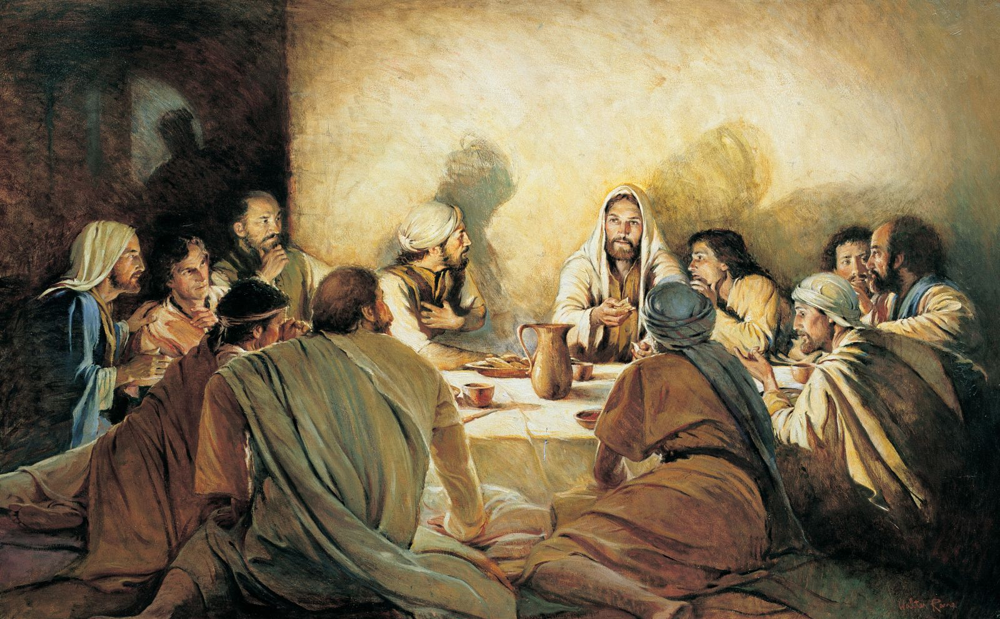

പെസഹാ വ്യാഴം
പെസഹാ വ്യാഴം
പ്രാരംഭ ഗീതം
ജീവൻ പകരും നാഥാ നീ,
ജീവനു തുലയ്ം സ്നേഹിച്ചു
ഭൂവിനെ, രക്ഷാ മാർഗ്ഗത്തിൽ
ദ്യോവിൻ ഭാഗ്യം നൽകിടുവാൻ
നിര്വൃതി നൽകാൻ സ്നേഹത്തിന്
നിത്യത പകരും കൂദാശ
സ്ഥാപിച്ചല്ലോ സെഹിയോനില്
ദിവ്യവിരുന്നായ് ദൈവസുതന്.
കര്ത്താവന്നാ ശിഷ്യര്തന്
കാലുകള് കഴുകീ വിനയത്താല്
മാതൃകനൽകീ മനുജര്ക്കായ്
സകലരുമതുപോല് ചെയ്തിടുവാന്.
അന്നുമുറിച്ചവനേകിയൊരാ
ഗാത്രവു മപ്പവുമൊന്നായി
ജീവിതമതുപോലഖിലര്ക്കും
ഭൂവില് മുറിയണമപ്പം പോല്.
നിത്യവുമങ്ങേ സാന്നിധ്യം
നീക്കും നമ്മുടെ രോഗങ്ങള്
ഔഷധമാകുന്നീയുലകില്
ദോഷ ഫലങ്ങള് പോക്കിടുവാന്.
പാപികളാകും മാനവരെ
പരിചൊടു നാഥന് ദര്ശിപ്പു
ഓസ്തിയിൽ നിന്നതി സ്നേഹമൊടേ
നിസ്തുലമാകും കൃപയാലേ.
സ്നേഹത്തിന്റെ കല്പന
(യോഹ. 13:34-35)
കാര്മ്മി: അന്നാപെസഹാത്തിരുനാളില്
കര്ത്താവരുളിയ കല്പനപോല്
തിരുനാമത്തില് ച്ചേര്ന്നീടാം
ഒരുമയോടി ബലിയര്പ്പിക്കാം.
സമുഹം: അനുരഞ്ജിതരായ് തീര്ന്നീടാം
നവമൊരു പീഠമൊരുക്കീടാം
ഗുരുവിന് സ്നേഹമൊടീയാഗം
തിരുമുമ്പാകെയണച്ചീടാം.
മാലാഖമാരുടെ കീര്ത്തനം
(ലൂക്കാ 2:14)
കാര്മ്മി: അത്യുന്നതങ്ങളിൽ ദൈവത്തിനു സ്തൂതി.
സമൂഹം: ആമ്മേന്.
കാര്മ്മി: ഭൂമിയില് മനുഷ്യര്ക്കു സമാധാനവും പ്രത്യാശയും എപ്പോഴും എന്നേക്കും.
സമൂഹം: ആമ്മേന്.
(പകരം ഗാനം)
കാര്മ്മി: അത്യുന്നതമാം സ്വര്ല്ലോകത്തില് സര്വ്വേശനു സ്തൂതി ഗീതം.
സമൂഹം: ഭൂമിയിലെങ്ങും മര്ത്യനു ശാന്തി പ്രത്യാശയു മെന്നേക്കും.
കാര്മ്മി: സ്വര്ഗ്ഗസ്ഥനായ ഞങ്ങളുടെ പിതാവേ (സമൂഹവും ചേർന്ന്) അങ്ങയുടെ നാമം പൂജിതമാകണമെ / അങ്ങയുടെ രാജ്യം വരണമെ. അങ്ങയുടെ തിരുമനസ്സു സ്വര്ഗ്ഗത്തിലെപ്പോലെ ഭൂമിയിലുമാകണമെ. ഞങ്ങള്ക്കു ആവശ്യകമായ ആഹാരം / ഇന്നു ഞങ്ങള്ക്കു തരണമെ. ഞങ്ങളൂടെ കടക്കാരോടു ഞങ്ങള് ക്ഷമിച്ചിരിക്കുന്നതുപോലെ, ഞങ്ങളുടെ കടങ്ങളും പാപങ്ങളും ഞങ്ങളോടു ക്ഷമിക്കണമെ. ഞങ്ങളെ പ്രലോഭനത്തില് ഉള്പ്പെടുത്തരുതെ. ദുഷ്ടാരൂപിയില്നിന്നു ഞങ്ങളെ രക്ഷിക്കണമെ. എന്തുകൊണ്ടെന്നാല് /രാജ്യവും ശക്തിയും മഹത്വവും എന്നേക്കും അങ്ങയുടേതാകുന്നു. ആമ്മേന്.
സ്വര്ഗ്ഗസ്ഥനായ ഞങ്ങളുടെ പിതാവേ / അങ്ങയുടെ മഹത്വത്താല് സ്വര്ഗ്ഗവും ഭൂമിയും നിറഞ്ഞിരിക്കുന്നു / മാലാഖമാരും മനുഷ്യരും അങ്ങു പരിശുദ്ധന് പരിശുദ്ധന് പരിശുദ്ധന് എന്ന് ഉല്ഘോഷിക്കുന്നു.
ശുശ്രൂഷി: നമുക്കു പ്രാര്ത്ഥിക്കാം; സമാധാനം നമ്മോടുകൂടെ.
പ്രാരംഭ പ്രാര്ത്ഥന
കാര്മ്മി: ഞങ്ങളുടെ കര്ത്താവായ മിശിഹായേ, ശിഷ്യന്മാരുടെ പാദങ്ങള് കഴുകിക്കൊണ്ട് ശുശ്രൂഷയുടെ മാതൃക കാണിക്കുകയും, പരിശുദ്ധ കുര്ബാന സ്ഥാപിച്ചുകൊണ്ട് സ്വന്തം ശരീരരക്തങ്ങള് ഭക്ഷണപാനിയങ്ങളായി നൽകുകയും ചെയ്ത നിനക്കു ഞങ്ങള് നന്ദി പറയുന്നു. സ്നേഹത്തിന്റെ കൂദാശയായി നീ സ്ഥാപിച്ചു നൽകിയ ഈ ദിവ്യരഹസ്യങ്ങള് നിര്മ്മല മന:സാക്ഷിയോടും വിശുദ്ധ വിചാരങ്ങളോടുംകൂടി അര്പ്പിക്കുവാന് ഞങ്ങളെ യോഗ്യരാക്കണമേ. സകലത്തിന്റെയും നാഥാ, എന്നേക്കും.
സമൂഹം: ആമ്മേന്.
സങ്കീര്ത്തനമാല
സങ്കീര്ത്തനം 135
കാര്മ്മി: കര്ത്താവിനെ നിങ്ങള് പ്രകീര്ത്തിക്കുവിന്! അവന് നല്ലവനാകുന്നു; അവന്റെ കാരുണ്യം അനന്തമാണ്.
സമൂ: കര്ത്താവിനെ നിങ്ങള് പ്രകീര്ത്തിക്കുവിന്! അവന് നല്ലവനാകുന്നു; അവന്റെ കാരുണ്യം അനന്തമാണ്.
കാര്മ്മി: മഹോന്നതനായ ദൈവത്തെ പ്രകീര്ത്തിക്കുവിന്, അവന്റെ കാരുണ്യം അനന്തമാണ്.
സമൂ: കര്ത്താവിനെ നിങ്ങള് പ്രകീര്ത്തിക്കുവിന് അവന് നല്ലവനാകുന്നു. അവന്റെ കാരുണ്യം അനന്തമാണ്.
കാര്മ്മി: നാഥന്മാരുടെ നാഥനെ പ്രകീര്ത്തിക്കുവിന് അവന്റെ കാരുണ്യം അനന്തമാണ്.
സമൂ: കര്ത്താവിനെ നിങ്ങള് പ്രകീര്ത്തിക്കുവിന് അവന് നല്ലവനാകുന്നു. അവന്റെ കാരുണ്യം അനന്തമാണ്.
കാര്മ്മി: ഈജിപ്തിലെ കടിഞ്ഞൂല് തനയരെ സംഹരിച്ചവനെ പ്രകീര്ത്തിക്കുവിന്.
സമൂ: കര്ത്താവിനെ നിങ്ങള് പ്രകീര്ത്തിക്കുവിന് അവന് നല്ലവനാകുന്നു. അവന്റെ കാരുണ്യം അനന്തമാണ്.
കാര്മ്മി: അവരുടെ ഇടയില് നിന്ന് /ഇസ്രായേല്ജനത്തെ മോചിപ്പിച്ചവനെ പ്രകീര്ത്തിക്കുവിന്
സമൂ: കര്ത്താവിനെ നിങ്ങള് പ്രകീര്ത്തിക്കുവിന് അവന് നല്ലവനാകുന്നു. അവന്റെ കാരുണ്യം അനന്തമാണ്.
കാര്മ്മി: കടലിനെ വിഭജിച്ചവനെ പ്രകീര്ത്തിക്കുവിന് അതിന്റെ നടുവിലൂടെ അവരെ നയിച്ചവനെ പ്രകീര്ത്തിക്കുവിന്.
സമൂ: കര്ത്താവിനെ നിങ്ങള് പ്രകീര്ത്തിക്കുവിന് അവന് നല്ലവനാകുന്നു. അവന്റെ കാരുണ്യം അനന്തമാണ്.
കാര്മ്മി: ഫറവോയെയും സൈന്യത്തെയും കടലില് താഴ്ത്തിയവനെ പ്രകീര്ത്തിക്കുവിന്.
സമൂ: കര്ത്താവിനെ നിങ്ങള് പ്രകീര്ത്തിക്കുവിന് അവന് നല്ലവനാകുന്നു. അവന്റെ കാരുണ്യം അനന്തമാണ്.
കാര്മ്മി: ശക്തരായ രാജാക്കന്മാരെ നിഹനിച്ചവനെ പ്രകീര്ത്തിക്കുവിന്.
സമൂ: കര്ത്താവിനെ നിങ്ങള് പ്രകീര്ത്തിക്കുവിന് അവന് നല്ലവനാകുന്നു. അവന്റെ കാരുണ്യം അനന്തമാണ്.
കാര്മ്മി: അവരുടെ ദേശം അവകാശമായി ജനത്തിനേകിയവനെ പ്രകീര്ത്തിക്കുവിന്.
സമൂ: കര്ത്താവിനെ നിങ്ങള് പ്രകീര്ത്തിക്കുവിന് അവന് നല്ലവനാകുന്നു. അവന്റെ കാരുണ്യം അനന്തമാണ്.
കാര്മ്മി: വൈരികളില് നിന്ന് രക്ഷിച്ചവനെ പ്രകീര്ത്തിക്കുവിന്
സമൂ: കര്ത്താവിനെ നിങ്ങള് പ്രകീര്ത്തിക്കുവിന് അവന് നല്ലവനാകുന്നു. അവന്റെ കാരുണ്യം അനന്തമാണ്.
കാര്മ്മി: പിതാവിനും പുത്രനും പരിശുദ്ധാത്മാവിനും സ്തുതി.
സമൂ: ആദിമുതല് എന്നേക്കും, ആമ്മേന്.
കാര്മ്മി: ഞങ്ങളുടെ രക്ഷകനായ ദൈവമേ, ഞങ്ങളെ സഹായിക്കണമേ. അങ്ങയുടെ തിരുനാമത്തെ പ്രതി ഞങ്ങളുടെ പാപങ്ങള് ക്ഷമിക്കുകയും ചെയ്യണമേ.
ശുശ്രൂഷി: നമുക്കു പ്രാര്ത്ഥിക്കാം. സമാധാനം നമ്മോടുകൂടെ.
കാര്മ്മി: മഹോന്നതനായ കര്ത്താവേ, അങ്ങയുടെ ഭയഭക്തിജനകമായ പീഠത്തിന്റെയും ഉന്നതമായ ത്രോണോസിന്റെയും അലംകൃതവും സ്തുത്യർഹവുമായ സിംഹാസനത്തിന്റെയും മുമ്പാകെ, അങ്ങയുടെ ശുശ്രൂഷകന്മാരായ ക്രോവേന്മാര് ഇടവിടാതെ സ്തുതിക്കുകയും സ്രാപ്പേന്മാര് പരിശുദ്ധന് എന്ന് നിരന്തരം ഉദ്ഘോഷിക്കുകയും ചെയ്യുന്നു. അവരോടു ചേര്ന്ന് ഞങ്ങളും അങ്ങേയ്ക്ക് ഭയഭക്തികളോടെ സ്തുതിയും ബഹുമാനവും കൃതജ്ഞതയും സമര്പ്പിക്കുന്നു. പിതാവും പുത്രനും പരിശുദ്ധാത്മാവുമായ സര്വ്വേശ്വരാ, എന്നേക്കും.
സമൂഹം: ആമ്മേന്.
സങ്കീർത്തനത്തിനു ശേഷം
(കാർമ്മികൻ ധൂപം ആശീർവ്വദിക്കുന്നു.)
കാര്മ്മി: പിതാവും പുത്രനും പരിശുദ്ധാത്മാവുമായ സര്വ്വേശ്വരാ / അങ്ങയുടെ ബഹുമാനത്തിനായി ഞങ്ങള് സമര്പ്പിക്കുന്ന ഈ ധൂപം / അങ്ങയുടെ മഹനീയത്രിത്വത്തിന്റെ നാമത്തില് + ആശീർവദിക്കപ്പെടട്ടെ. ഇത് അങ്ങയുടെ പ്രസാദത്തിനും / അങ്ങയുടെ അജഗണത്തിന്റെ പാപങ്ങളുടെ മോചനത്തിനും കാരണമാകട്ടെ എന്നേക്കും.
സമൂഹം: ആമ്മേന്.
കാര്മ്മി: ഞങ്ങളുടെ കര്ത്താവായ ദൈവമേ, അങ്ങു നല്കിയിട്ടുള്ളതും എന്നാല് കൃതജ്ഞത പ്രകാശിപ്പിക്കുവാന് ഞങ്ങള്ക്കു കഴിയാത്തതുമായ / എല്ലാ സഹായങ്ങള്ക്കും അനുഗ്രഹങ്ങള്ക്കുമായി / സകല സൗഭാഗ്യങ്ങളും നന്മകളും നിറഞ്ഞു മുടിചൂടിനില്ക്കുന്ന സഭയില് / ഞങ്ങള് അങ്ങയെ നിരന്തരം സ്തുതിക്കുകയും മഹത്വപ്പെടുത്തുകയും ചെയ്യട്ടെ. അങ്ങു സകലത്തിന്റെയും നാഥനും സൃഷ്ടാവുമാകുന്നു / പിതാവും പുത്രനും പരിശുദ്ധാത്മാവുമായ സര്വ്വേശ്വരാ എന്നേക്കും.
സമൂഹം: ആമ്മേന്.
(മദുബഹയുടെ വിരിനീക്കുന്നു. ശുശ്രൂഷി മദുബഹയിൽ പ്രവേശിച്ച് ധൂപിക്കുന്നു.)
(ഉത്ഥാന ഗീതം)
(എല്ലാവരും അൾത്താരയിലേക്ക് തിരിഞ്ഞു ശിരസ്സു നമിക്കുന്നു)
സര്വ്വാധിപനാം കര്ത്താവേ
നിന്നെ വണങ്ങി നമിക്കുന്നു
ഈശോ നാഥാ വിനയമൊടെ
നിന്നെ നമിച്ചു പുകഴ്ത്തുന്നു.
മര്ത്യനു നിത്യമഹോന്നതമാ
മുത്ഥാനം നീയരുളൂന്നു
അക്ഷയമവനുടെ ആത്മാവി
ന്നുത്തമരക്ഷയുമേകുന്നു.
ശുശ്രൂഷി: നമുക്കു പ്രാര്ത്ഥിക്കാം; സമാധാനം നമ്മോടുകൂടെ.
(കാർമ്മികൻ ജനങ്ങൾക്ക് നേരെ തിരിഞ്ഞ്)
കാര്മ്മി: എന്റെ കര്ത്താവേ നീ സത്യമായും ഞങ്ങളുടെ ശരീരങ്ങളെ ഉയര്പ്പിക്കുന്നവനും / ആത്മാക്കളെ രക്ഷിക്കുന്നവനും / ജീവനെ നിത്യം പരിപാലിക്കുന്നവനുമാകുന്നു. ഞങ്ങള് എപ്പോഴും നിനക്കു സ്തുതിയും കൃതജ്ഞതയും ആരാധനയും സമര്പ്പിക്കുവാന് കടപ്പെട്ടവരാകുന്നു / സകലത്തിന്റെയും നാഥാ എന്നേക്കും.
സമൂഹം: ആമ്മേന്.
ത്രൈശുദ്ധ കീര്ത്തനം
ശബ്ദമുയര്ത്തിപ്പാടിടുവിന്
സര്വ്വരുമൊന്നായ് പാടിടുവിൻ
എന്നെന്നും ജീവിക്കും
സര്വ്വേശ്വരനെ വാഴ്ത്തിടുവിൻ
പരിപാവനനാം സര്വ്വേശാ
പരിപാവനനാം ബലവാനേ
പരിപാവനനാം അമര്ത്യനേ
നിന്കൃപ ഞങ്ങള്ക്കേകണമേ.
ശുശ്രൂഷി: നമുക്കു പ്രാര്ത്ഥിക്കാം; സമാധാനം നമ്മോടുകൂടെ.
കാര്മ്മി: വിശുദ്ധരില് സംപ്രീതനായി വസിക്കുന്ന / പരിശുദ്ധനും സ്തുത്യർഹനും ബലവാനും അമർത്യനുമായ കര്ത്താവേ, അങ്ങയുടെ സ്വഭാവത്തിനൊത്തവിധം / എപ്പോഴും ഞങ്ങളെ കടാക്ഷിക്കുകയും അനുഗ്രഹിക്കുകയും / ഞങ്ങളോടു കരുണകാണിക്കുകയും ചെയുണമെ. പിതാവും പുത്രനും പരിശുദ്ധാത്മാവുമായ സര്വ്വേശ്വരാ എന്നേക്കും.
സമൂഹം: ആമ്മേന്.
വചന ശുശ്രൂഷ
പഴയ നിയമ വായനകള്
ഒന്നാം വായന (പുറപ്പാട് 12: 1-20)
രണ്ടാം വായന (മലാക്കി 1: 10-14)
ശുശ്രൂഷി: സഹോദരരേ നിങ്ങള് ഇരുന്നു ശ്രദ്ധയോടെ കേള്ക്കുവിന്.
വായിക്കുന്നയാള്: ----- പുസ്തകത്തില് നിന്നുള്ള വായന (കാർമ്മികനു നേരെ തിരിഞ്ഞ്) ഗുരോ ആശീർവ്വദിക്കണമേ.
കാര്മ്മി: ദൈവം നിന്നെ + അനുഗ്രഹിക്കട്ടെ.
(വായന തീരുമ്പോൾ)
സമൂഹം: നമ്മുടെ കര്ത്താവായ മിശിഹായ്ക്കു സ്തൂതി.
ശുശ്രൂഷി: പ്രകീര്ത്തനം ആലപിക്കുവാനായി നിങ്ങള് എഴുന്നേല്ക്കുവിന്.
പ്രകീര്ത്തനം
കാര്മ്മി: സര്വ്വചരാചരവും,
ദൈവമഹത്വത്തെ, വാഴ്ത്തിപ്പാടുന്നു.
സമൂഹം: ദിവ്യാത്മാവിന് ഗീതികളാല്,
ഹല്ലേലുയ്യാ ഗീതികളാല്
കര്ത്താവിന് തിരു പെസഹാതന്
നിര്മ്മലമാകുമനുസ്മരണം, കൊണ്ടാടാം,
ഇന്നീ വേദികയില്.
കാര്മ്മി: തന് മഹിമാവല്ലോ,
വാനിലുമൂഴിയിലും, തിങ്ങിവിളങ്ങുന്നു.
സമൂഹം: ദിവ്യാത്മാവിന് ഗീതികളാൽ ...
കാര്മ്മി: ജനതകളവിടുത്തെ,
മഹിമകള് പാടുന്നു, താണുവണങ്ങുന്നു.
സമൂഹം: ദിവ്യാത്മാവിന് ഗീതികളാൽ ...
കാര്മ്മി: നിത്യപിതാവിനും,
സുതനും റൂഹായ്ക്കും, സ്തുതിയുണ്ടാകട്ടെ.
സമൂഹം: ദിവ്യാത്മാവിന് ഗീതികളാൽ ...
കാര്മ്മി: ആദിയിലെപ്പോലെ,
ഇപ്പൊഴുമെപ്പോഴും, എന്നേക്കും ആമ്മേന്.
സമൂഹം: ദിവ്യാത്മാവിന് ഗീതികളാൽ ...
ശുശ്രൂഷി: നമുക്കു പ്രാര്ത്ഥിക്കാം; സമാധാനം നമ്മോടുകൂടെ.
കാര്മ്മി: ഞങ്ങളുടെ കര്ത്താവായ ദൈവമേ / അങ്ങയുടെ ജീവദായകവും ദൈവികവുമായ / കല്പനകളുടെ മധുരസ്വരം ശ്രവിക്കുന്നതിനും ഗ്രഹിക്കുന്നതിനും / ഞങ്ങളുടെ ബുദ്ധിയെ പ്രകാശിപ്പിക്കണമെ. അതുവഴി ആത്മശരീങ്ങള്ക്കുപകരിക്കുന്ന / സ്നേഹവും ശരണവും രക്ഷയും ഞങ്ങളില് ഫലമണിയുന്നതിനും / നിരന്തരം ഞങ്ങള് അങ്ങയെ സ്തുതിക്കുന്നതിനും / അങ്ങയുടെ കാരുണ്യത്താലും അനുഗ്രഹത്താലും ഞങ്ങളെ സഹായിക്കണമെ. പിതാവും പുത്രനും പരിശുദ്ധാത്മാവുമായ സര്വ്വേശ്വരാ എന്നേക്കും.
സമൂഹം: ആമ്മേന്.
ലേഖനം
(1കോറി 11: 23-39)
വായിക്കുന്ന ആള്: സഹോദരരേ, വി. പൗലോസ് ശ്ലീഹാ കോറീന്തോസുകാർക്ക് എഴുതിയ ലേഖനം. (കാർമ്മികനു നേരെ തിരിഞ്ഞ്) ഗുരോ ആശീർവ്വദിക്കണമേ.
കാര്മ്മി: മിശിഹാ + നിന്നെ അനുഗ്രഹിക്കട്ടെ.
(ഒരു ശുശ്രൂഷി കത്തിച്ച തിരിയുമായി സമീപത്തു നിൽക്കുന്നു).
(വായന തീരുമ്പോൾ)
സമൂഹം: നമ്മുടെ കര്ത്താവായ മിശിഹായ്ക്കു സ്തുതി.
ഹല്ലേലുയ്യാ ഗീതം
ഹല്ലേലുയ്യാ പാടാമൊന്നായ്
ഹല്ലേലുയ്യാ ഹല്ലേലുയ്യാ.
ശിഷ്യന്മാരുടെ പാദം കഴുകി
സ്നേഹത്തിന് പുതു മാതൃക നൽകി
തന്റെ ശരീരം നൽകി നമുക്കായ്
നവമൊരു ജീവന് നമ്മില് പുലരാന്.
മാതൃകയേവം കൈക്കൊണ്ടീടാന്
വചനം നമ്മെ മാടിവിളിപ്പു.
താതനുമതുപോല് സുതനും
പരിശുദ്ധാത്മാവിനും സ്തുതിയുയരട്ടെ
ആദിമുതല്ക്കേയിന്നും നിത്യവു
മായി ഭവിച്ചീടട്ടെ ആമ്മേന്.
ഹല്ലേലുയ്യാ പാടാമൊന്നായ്
ഹല്ലേലുയ്യാ ഹല്ലേലുയ്യാ.
സുവിശേഷം (യോഹന്നാൻ 13: 1-14 + മത്തായി 26: 26-30)
പ്രസംഗം
കാല് കഴുകല് ശുശ്രൂഷ
ശുശ്രൂഷി: നമുക്കു പ്രാര്ത്ഥിക്കാം; സമാധാനം നമ്മോടുകൂടെ.
കാര്മ്മി: ഞങ്ങളുടെ കര്ത്താവും ഗുരുവുമായ മിശിഹായേ, അന്ത്യ അത്താഴവേളയില് നീ ശിഷ്യന്മാരുടെ പാദങ്ങള് കഴുകിക്കൊണ്ട് എളിമയുടെയും ശുശ്രൂഷയുടെയും ആത്മസമര്പ്പണത്തിന്റെയും മാതൃക നൽകുകയും അത് അനുകരിക്കുവാന് ഞങ്ങളോട് ആവശ്യപ്പെടുകയും ചെയ്തുവല്ലോ. ജീവദായകമായ നിന്റെ കല്പന അനുസരിച്ചുകൊണ്ട് ഈ ശുശ്രൂഷ യഥായോഗ്യം നിർവ്വഹിക്കുവാനും പരസ്പര സ്നേഹത്തിലൂടെ ഇതിന്റെ ചൈതന്യം അനുദിന ജീവിതത്തില് നിലനിര്ത്തുവാനും ഞങ്ങളെ അനുഗ്രഹിക്കണമേ. സകലത്തിന്റെയും നാഥാ, എന്നേക്കും.
സമൂഹം: ആമ്മേന്.
(സമൂഹം ഇരിക്കുന്നു. കാർമ്മികൻ കാപ്പ മാറ്റി വെള്ളക്കച്ച അരയിൽ ചുറ്റി, 12 പേരുടെ കാലുകൾ കഴുകി ചുംബിക്കുന്നു.)
കാല്കഴുകലിന്റെ ഗീതം
താലത്തില് വെള്ളമെടുത്തു
വെണ്കച്ചയുമരയില് ചുറ്റി
മിശിഹാ തന് ശിഷ്യന്മാരുടെ
പാദങ്ങള് കഴുകി.
വിനയത്തിന് മാതൃക നല്കാൻ
സ്നേഹത്തിന് പൊന് കൊടി നാട്ടാന്
സകലേശന് ദാസന്മാരുടെ
പാദങ്ങള് കഴുകി.
സ്നേഹത്തിന് ചിറകു വിരിഞ്ഞു
രാജാളി തെളിഞ്ഞു പറഞ്ഞു,
സ്നേഹിതരേ, നിങ്ങള്ക്കിന്നൊരു
മാതൃക ഞാനേകി.
ഗുരുവെന്നു വിളിപ്പൂ നിങ്ങള്
പരമാര്ത്ഥതയുണ്ടതിലെങ്കില്
ഗുരുനൽകിയ പാഠം നിങ്ങള്
സാദരമോര്ത്തിടുവിന്.
പാദങ്ങള് കഴുകിയ ഗുരുവിന്
ശിഷ്യന്മാര് നിങ്ങള്, അതോര്ത്താല്
അന്യോന്യം പാദം കഴുകാന്
ഉത്സുകരായ്ത്തീരും.
വത്സലരേ, നിങ്ങള്ക്കായ് ഞാന്
നൽകുന്നു പുതിയൊരു നിയമം
സ്നേഹിപ്പിന് സ്വയമെന്നതുപോല്
അന്യോന്യം നിങ്ങള്.
അവനിയിലെന് ശിഷ്യഗണത്തെ-
യറിയാനുള്ളടയാളമിതാ
സ്നേഹിപ്പിന് സ്വയമെന്നതുപോല്
അന്യോന്യം നിങ്ങള്.
സ്നേഹിതനെ രക്ഷിപ്പതിനായ്
ജീവന് ബലി ചെയ്വതിനേക്കാൾ
ഉന്നതമാം സ്നേഹം പാര്ത്താല്
മറ്റെന്തുണ്ടുലകില്?
ഞാനേകിയ കല്ലനയെല്ലാം
പാലിച്ചു നടന്നിടുമെങ്കില്
നിങ്ങളിലെന് നയനം പതിയും
സ്നേഹിതരായ്ത്തീരും.
ദാസന്മാരെന്നു വിളിക്കാ,
നിങ്ങളെ ഞാനിനിയൊരുനാളും
സ്നേഹിതരായ്ത്തീര്ന്നു, ചിരമെന്
വത്സലരേ,നിങ്ങള്.
(കാലുകഴുകലിനു ശേഷം കാറോസൂസായോട്കൂടി കുർബാന തുടരുന്നു).
കാറോസൂസ
ശുശ്രൂഷി: നമുക്കെല്ലാവര്ക്കും അനുതാപത്തോടും ഭക്തിയോടുംകൂടി നിന്ന് കർത്താവേ ഞങ്ങളുടെമേൽ കരുണയുണ്ടാകണമേ എന്ന് പ്രാര്ത്ഥിക്കാം.
സമൂഹം: കര്ത്താവേ, ഞങ്ങളുടെമേല് കരുണയുണ്ടാകണമേ.
ശുശ്രൂഷി: നാല്പതു ദിനരാത്രങ്ങള് മരുഭൂമിയില് ഉപവാസത്തിലും പ്രാര്ത്ഥനയിലും ചെലവഴിച്ച മിശിഹായേ, തപസ്സിന്റെയും പ്രായശ്ചിത്തത്തിന്റെയും ചൈതന്യത്തില് ജീവിക്കുവാനും പ്രാര്ത്ഥനാരൂപിയില് വളരുവാനും ഞങ്ങളെ അനുഗ്രഹിക്കണമെന്ന് നിന്നോടു ഞങ്ങള് പ്രാര്ത്ഥിക്കുന്നു.
സമൂഹം: കര്ത്താവേ, ഞങ്ങളുടെമേല് കരുണയുണ്ടാകണമേ.
ശുശ്രൂഷി: ലോകത്തിന്റെ പാപങ്ങള് നീക്കുന്ന ദിവ്യകുഞ്ഞാടായ മിശിഹായേ, ഞങ്ങളുടെയും മറ്റുള്ളവരുടെയും പാപങ്ങള്ക്കു പരിഹാരമനുഷ്ഠിക്കുവാൻ ഞങ്ങളെ ശക്തരാക്കണമെന്നു ഞങ്ങള് പ്രാര്ത്ഥിക്കുന്നു.
സമൂഹം: കര്ത്താവേ, ഞങ്ങളുടെമേല് കരുണയുണ്ടാകണമേ.
ശുശ്രൂഷി: ഞാന് സ്വര്ഗ്ഗത്തില് നിന്നിറങ്ങിയ അപ്പമാകുന്നു. എന്റെ ശരീരം ഭക്ഷിക്കുകയും എന്റെ രക്തം പാനംചെയ്യുകയും ചെയ്യുന്നവന് നിത്യരക്ഷ പ്രാപിക്കും എന്നരുളിച്ചെയ്തു കര്ത്താവേ, നിന്റെ ശരീരരക്തങ്ങള് സ്വീകരിച്ച് നിതൃജീവിതത്തിന് യോഗ്യരാകുവാന് അനുഗ്രഹിക്കണമെന്നു ഞങ്ങള് പ്രാര്ത്ഥിക്കുന്നു.
സമൂഹം: കര്ത്താവേ, ഞങ്ങളുടെമേല് കരുണയുണ്ടാകണമേ.
ശുശ്രൂഷി: ഞാന് ഈ ചെയ്തത് നിങ്ങള് എന്റെ ഓര്മ്മയ്ക്കായി ചെയ്യുവിന് എന്നരുളിച്ചെയ്ത കര്ത്താവേ, ഈ ബലിയില് പങ്കുചേര്ന്ന് നിന്റെ രക്ഷാകരസ്നേഹം നിരന്തരം അനുഭവിക്കുവാൻ ഞങ്ങളെ സഹായിക്കണമെന്ന് ഞങ്ങള് പ്രാര്ത്ഥിക്കുന്നു.
സമൂഹം: കര്ത്താവേ, ഞങ്ങളുടെമേല് കരുണയുണ്ടാകണമേ.
ശുശ്രൂഷി: ശിഷ്യന്മാരുടെ പാദങ്ങള് കഴുകി വിനയത്തിന്റെയും ആത്മസമര്പ്പണത്തിന്റെയും മാതൃക നൽകിയ കര്ത്താവേ, ഞങ്ങളുടെ സഹോദരങ്ങളെ എളിമയോടെ ശുശ്രൂഷിക്കുവാന് ഞങ്ങളെ ശക്തരാക്കണമെന്ന് ഞങ്ങള് പ്രാര്ത്ഥിക്കുന്നു.
സമൂഹം: കര്ത്താവേ, ഞങ്ങളുടെമേല് കരുണയുണ്ടാകണമേ.
ശുശ്രൂഷി: നിങ്ങള് പരസ്പരം പാദങ്ങള് കഴുകുവിന് എന്നരുളിച്ചെയ്തു കര്ത്താവേ, വിനയത്തിന്റെയും ശുന്യവത്കരണത്തിന്റെയും ജീവിതം നയിക്കുവാന് ഞങ്ങളെ ശക്തരാക്കണമെന്നു ഞങ്ങള് പ്രാര്ത്ഥിക്കുന്നു.
സമൂഹം: കര്ത്താവേ, ഞങ്ങളുടെമേല് കരുണയുണ്ടാകണമേ.
ശുശ്രൂഷി: ഒരേ അപ്പത്തില്നിന്നു ഭക്ഷിക്കുകയും ഒരേ പാനപാത്രത്തില്നിന്നു പാനം ചെയ്യുകയും ചെയ്യുന്ന ഞങ്ങള് സ്നേഹത്തിലും ഐക്യത്തിലും ജീവിക്കുവാന് ഇടവരുത്തണമെന്ന് നിന്നോട് ഞങ്ങള് പ്രാര്ത്ഥിക്കുന്നു.
സമൂഹം: കര്ത്താവേ, ഞങ്ങളുടെമേല് കരുണയുണ്ടാകണമേ.
ശുശ്രൂഷി: ഞാന് നിങ്ങളെ സ്നേഹിച്ചതുപോലെ നിങ്ങളും പരസ്പരം സ്നേഹിക്കുവിന് എന്ന കൽപ്പന നൽകിയ കര്ത്താവേ, അനോന്യം സ്നേഹിച്ചുകൊണ്ട് നിന്റെ ശിഷ്യര്ക്ക് ഉചിതമായ ജീവിതം നയിക്കുവാന് ഞങ്ങളെ സഹായിക്കണമെന്നു ഞങ്ങള് പ്രാര്ത്ഥിക്കുന്നു.
സമൂഹം: കര്ത്താവേ, ഞങ്ങളുടെമേല് കരുണയുണ്ടാകണമേ.
ശുശ്രൂഷി: പ്രാര്ത്ഥനയുടെയും പരിത്യാഗത്തിന്റെയും മാര്ഗ്ഗത്തില് ഞങ്ങളെ നയിക്കുവാൻ ഞങ്ങളുടെ പരിശുദ്ധ പിതാവ് മാര് (പേര്) പാപ്പായെയും ഞങ്ങളുടെ സഭയുടെ തലവനും പിതാവുമായ മാര് (പേര്) മെത്രാപ്പോലീത്തയെയും ഞങ്ങളുടെ അതിരൂപതാദ്ധ്യക്ഷനായ മാര് (പേര്) മെത്രാപ്പോലീത്തയെയും ഞങ്ങളുടെ മേലദ്ധ്യക്ഷനും പിതാവുമായ മാര് (പേര്) മെത്രാനെയും മറ്റെല്ലാ മെത്രാന്മാരെയും ആത്മീയനന്മകള് നൽകി അനുഗ്രഹിക്കണമെന്നു ഞങ്ങള് പ്രാര്ത്ഥിക്കുന്നു.
സമൂഹം: കര്ത്താവേ, ഞങ്ങളുടെമേല് കരുണയുണ്ടാകണമേ.
ശുശ്രൂഷി: നമുക്കെല്ലാവര്ക്കും നാമോരോരുത്തരെയും പിതാവിനും പുത്രനും പരിശുദ്ധാത്മാവിനും സമര്പ്പിക്കാം.
സമൂഹം: ഞങ്ങളുടെ ദൈവമായ കര്ത്താവേ, അങ്ങേക്കു ഞങ്ങള് സമര്പ്പിക്കുന്നു.
കാര്മ്മി: അങ്ങയുടെ ഏകപുത്രനെ പെസഹാക്കുഞ്ഞാടായി ഞങ്ങള്ക്കു നൽകിയ പിതാവായ ദൈവമേ, ഞങ്ങള് അങ്ങേക്കു നന്ദി പറയുന്നു. അങ്ങയുടെ മഹനീയമായ ഈ ദാനം പരസ്പര സ്നേഹത്തില് ജീവിക്കുവാന് ഞങ്ങളെ ശക്തരാക്കട്ടെ. അവിടുത്തെ തിരുശരീരരക്തങ്ങൾ ഞങ്ങള്ക്ക് നിത്യസൗഭാഗ്യത്തിന് കാരണമായിത്തീരുകയും ചെയ്യട്ടെ. സകലത്തിന്റെയും നാഥാ, എന്നേക്കും.
സമൂഹം: ആമ്മേന്.
(തുടർന്നുള്ള ഭാഗങ്ങൾ കുർബാന പുസ്തകത്തിൽ നിന്ന്)
ദിവ്യരഹസ്യ ഗീതം
(രീതി: മിശിഹാ കർത്താവിന് തിരുമെയ് ...)
വരുവിൻ നമുക്ക് കർത്താവിനെ വാഴ്ത്താം.
കുരിശിന് ഭീകരമാം, പീഡകളേറ്റിടുവാന്
പോകുകയായ് നാഥന്.
പാവനമാം ബലി വേദികയില്
കാണ്മൂ ദിവ്യ രഹസ്യങ്ങള്
നാമിന്നീശോ മിശിഹാ തന്
ബലിതന് ഓര്മ്മയില് മുഴുകുന്നു.
വാഴ്ത്തീടാം വിണ്ണിന് ദാനങ്ങള്.
കർത്താവിനെ പ്രതീക്ഷിച്ച് അവനിൽ പ്രത്യാശയർപ്പിക്കുവിൻ
കുരിശിന് ഭീകരമാം, പീഡകളേറ്റിടുവാന് ...
ദിവ്യകാരുണൃഗീതവും അനുഗീതവും
(രീതി: ഹല്ലേലൂയ്യ പാടിടുന്നേൻ ...)
പീഡകളേറ്റു മിശിഹാനാഥന്
പാപികളാകും മര്ത്യര്ക്കായി.
നല്കുകയായീ തിരുനാഥന് തന്
മാംസവുമതുപോല് രക്തവുമിപ്പോള്.
പാപവിമോചന ചിന്തകളോടേ കൈക്കൊള്ളുക നാം ദിവ്യ രഹസ്യം.
കാര്മ്മി: നമ്മെ ജീവിപ്പിക്കുന്ന കര്ത്താവീശോമിശിഹായുടെ കൃപാവരം / അവിടുത്തെ കാരുണ്യത്താല് നാമെല്ലാവരിലും + സമ്പൂര്ണ്ണമാകട്ടെ (ജനങ്ങളെ ആശീർവ്വദിക്കുന്നു).
സമൂഹം: എപ്പോഴും എന്നേക്കും ആമ്മേന്.
പാവനമാകും പെസഹാ രഹസ്യം
പൂർത്തീകൃതമായ് ഈ സുദിനത്തിൽ.
പെസഹാ മേഷം ദൈവകുമാരൻ
പാരിതിനേകി ദിവ്യശരീരം.
കൈക്കൊള്ളുക നാമാത്തിരു ഗാത്രം
തിരുനിണമൊപ്പം, വിനയാന്വിതരായ്.
കൃതജ്ഞതാ പ്രാര്ത്ഥനകള്
കാര്മ്മി: കര്ത്താവായ ദൈവമേ, അങ്ങയുടെ തിരുവചനം ശ്രവിക്കുവാനും കീര്ത്തനങ്ങള് ആലപിച്ചുകൊണ്ട് അങ്ങയെ സ്തുതിക്കുവാനും അങ്ങ് ഞങ്ങളെ യോഗ്യരാക്കി. ഞങ്ങള്ക്കായി അങ്ങ് ഒരുക്കിയിരിക്കുന്ന സ്വര്ഗ്ഗഭാഗ്യം അനുഭവിച്ച് അങ്ങയെ അനവരതം പാടിപ്പുകഴ്ത്താൻ ഞങ്ങള് അര്ഹരാകട്ടെ. പിതാവും പുത്രനും പരിശുദ്ധാത്മാവുമായ സര്വേശ്വരാ, എന്നേക്കും.
സമൂഹം: ആമ്മേന്. കര്ത്താവേ, ആശീര്വദിക്കണമേ.
കാര്മ്മി: ഞങ്ങളുടെ നാഥനും രക്ഷകനുമായ മിശിഹായേ, നിന്റെ കുരിശുമരണത്താല് ഞങ്ങളുടെ പാപങ്ങള് മോചിക്കുകയും തിരുശരീരരക്തങ്ങളാൽ ഞങ്ങളെ സമ്പന്നരാക്കുകയും ചെയ്തു. നിന്നോടൊത്തു നിത്യം വസിക്കുവാന് ഈ ദിവ്യകൂദാശ ഞങ്ങള്ക്ക് കാരണമായിത്തീരട്ടെ. സകലത്തിന്റെയും നാഥാ, എന്നേക്കും.
സമൂഹം: ആമ്മേന്.
സമാപനാശീര്വാദം
(രീതി: കർത്താവാം മിശിഹാവഴിയായ് ...)
കാര്മ്മി: സ്നേഹപിതാവാം സകലേശന്
പാപികളാകും മര്ത്യര്ക്കായ്
പാരിലയച്ചു കനിവോടെ
ഏക കുമാരന് മിശിഹായെ
ജീവന് നല്കാൻ സ്ഥാപിച്ചു
പരിപൂജിതമാം കുര്ബാന,
വരദാനങ്ങള് ചൊരിയുന്നു
പാവനരൂപന് ദിവ്യാത്മന്.
സമൂഹം: ആമ്മേന്.
കാര്മ്മി: ശിഷ്യന്മാരുടെ പാദങ്ങള്
കഴുകിയ നാഥന് നല്കിയതാം
മാതൃകപോലെ സകലര്ക്കും
സേവനമെന്നും ചെയ്തിടുവിന്.
ദിവ്യശരീരവുമതുപോലെ
രക്തവുമേകിയ തിരുനാഥന്
ദിവ്യാനുഗ്രഹമരുളട്ടെ +
ഇപ്പൊഴുമെപ്പൊഴുമെന്നേക്കും.
സമൂഹം: ആമ്മേന്.
(അല്ലെങ്കിൽ)
കാര്മ്മി: തന്റെ ഏകജാതനെ നല്കാൻ തക്കവിധം, പാപികളായ നമ്മെ സ്നേഹിച്ച പിതാവായ ദൈവത്തെ നമുക്കു സ്തുതിക്കാം. എന്റെ ശരീരം ഭക്ഷിക്കുകയും എന്റെ രക്തം പാനം ചെയ്യുകയും ചെയ്യുന്നവന്, എന്നിലും ഞാന് അവനിലും വസിക്കും, എന്നരുളിച്ചെയ്യുകയും സ്നേഹത്തിന്റെ നിത്യസ്മാരകമായി വിശുദ്ധ കുര്ബാന സ്ഥാപിക്കുകയും ചെയ്ത രക്ഷകനായ മിശിഹായെ നമുക്കു വാഴ്ത്താം. വരപ്രസാദങ്ങള് ചൊരിഞ്ഞുകൊണ്ട്, നമ്മില് നിരന്തരം വസിക്കുന്ന പരിശുദ്ധാത്മാവിന് നന്ദി പറയാം. ശിഷ്യന്മാരുടെ പാദങ്ങള് കഴുകിയ മിശിഹായെ അനുകരിച്ച് സഹോദരങ്ങള്ക്കും സേവനം ചെയ്യുവാനും, ദൈവത്തെ പ്രീതിപ്പെടുത്തുവാനും അവിടുന്നു നമ്മെ ശക്തരാക്കട്ടെ. നാം സ്വീകരിച്ച തിരുശരീരരക്തങ്ങള് നമുക്കു നിത്യജീവന്റെ അച്ചാരമായിരിക്കട്ടെ. ഇന്നത്തെ തിരുക്കര്മ്മങ്ങളില് സംബന്ധിച്ച നിങ്ങളെല്ലാവരെയും സര്വശക്തനായ ദൈവം അനുഗ്രഹിക്കട്ടെ. ഇപ്പോഴും + എപ്പോഴും എന്നേക്കും.
സമൂഹം: ആമ്മേന്.
(വിശുദ്ധ കുർബാന സ്വീകരണശേഷം കുർബാന ചെറിയ അൾത്താരയിലേക്ക് ആഘോഷമായി കൊണ്ടുപോകുന്നു)
മിശിഹാ കര്ത്താവേ,
മാനവ രക്ഷകനേ
നരനുവി മോചനമേകിടുവാന്
നരനായ് വന്നു പിറന്നവനേ.
മിശിഹാ ...
മാലാഖമാരൊത്തു ഞങ്ങള്,
പാടിപുകഴ്ത്തുന്നു നിന്നെ (2)
പരിശുദ്ധന് പരിശുദ്ധന്,
കര്ത്താവേ നീ പരിശുദ്ധന് (2)